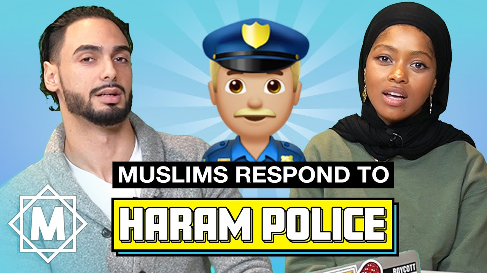
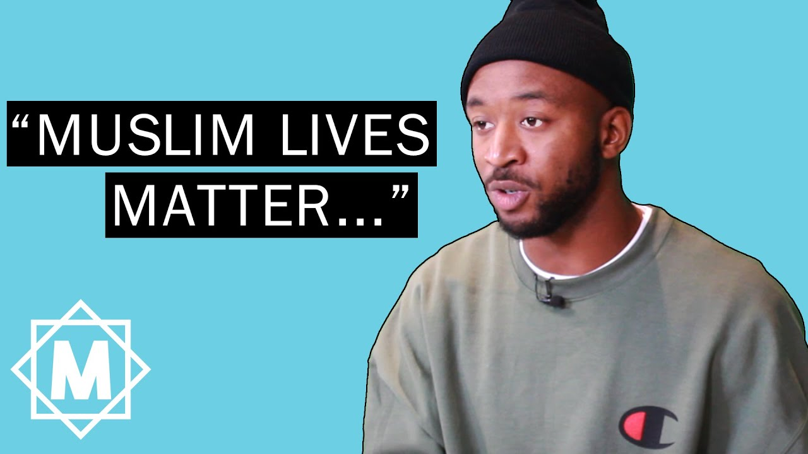
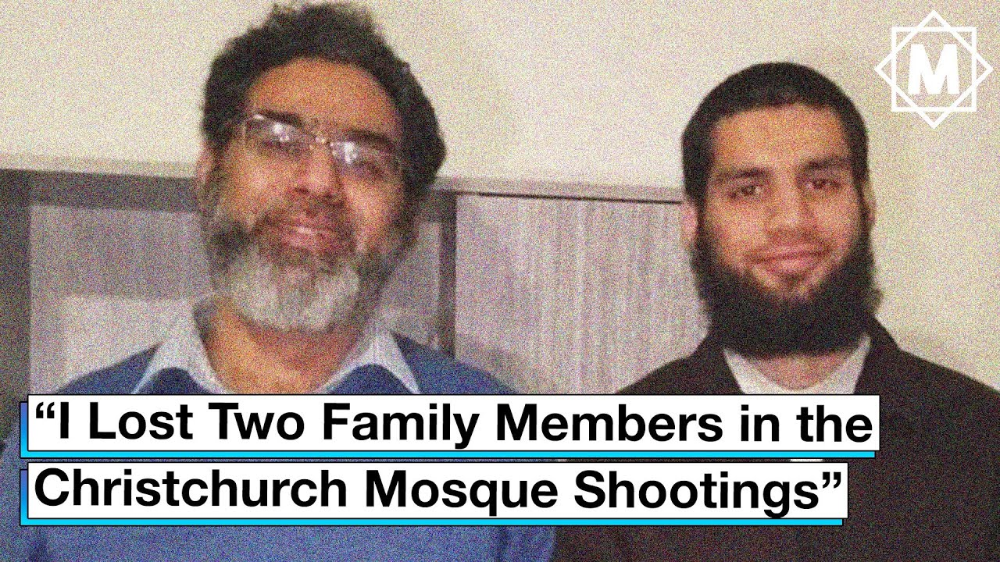
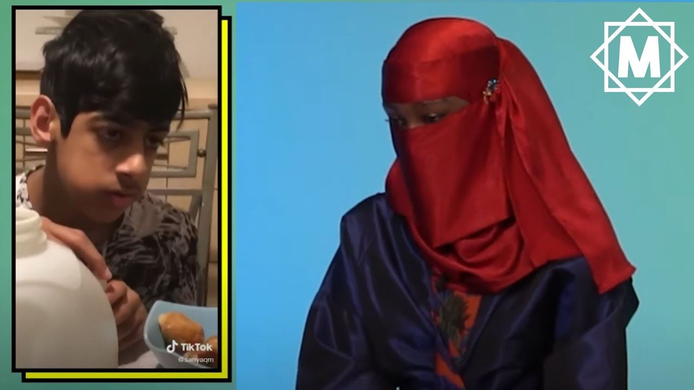
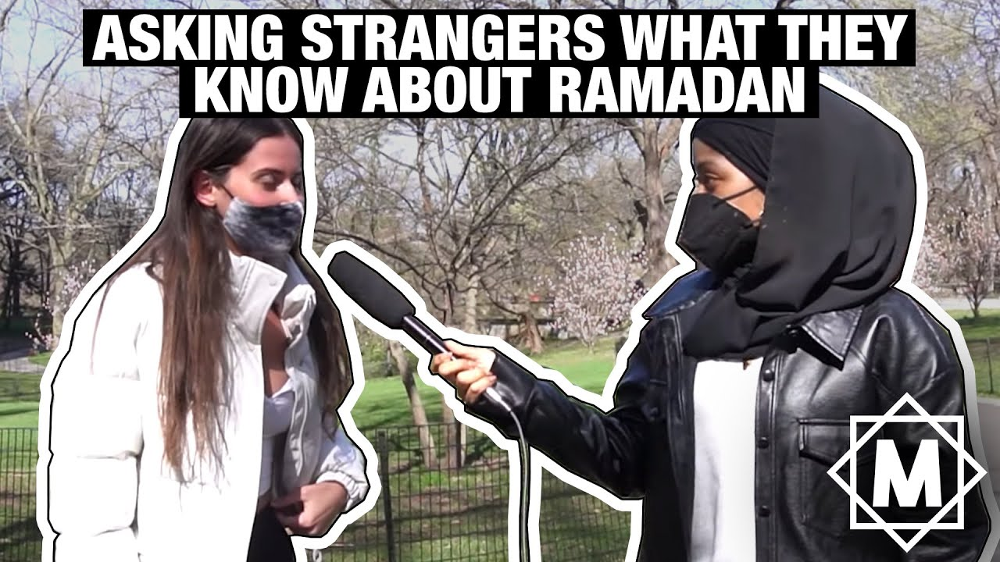
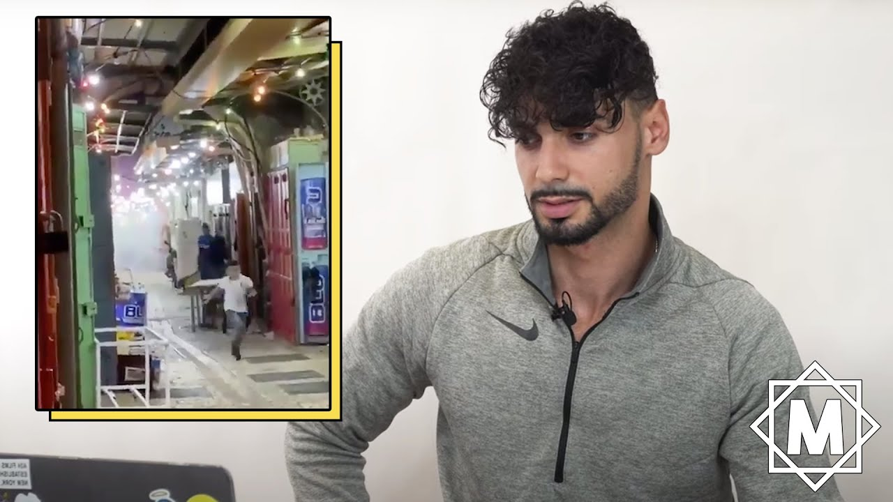
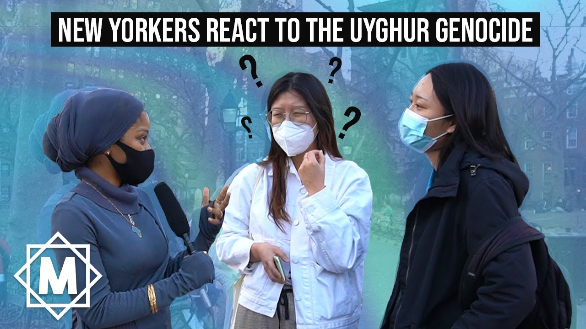

Muslims React to Joe Biden – We asked Muslims to come to our studio and react to the 46th United States President, Joe Biden — they had a lot to say. 👀
Muslims Respond To Haram Police – Things got spicy when we asked Muslims to come to our studio and tell us their thoughts on haram policing. 👀
Problematic Anti-Muslim Movie Tropes – yeah... we were fed up, so we made a video about it. 😬 Be sure to share and educate your friends on these harmful islamophobic movie tropes!
Muslims Respond To "Muslim Lives Matter" – We asked Muslims to come to our studio and tell us their thoughts on the phrase "Muslim Lives Matter" — here's what they had to say.
"I Lost Family At The Christchurch Mosque Shootings" – March 15, 2021 marks the two year anniversary of the Christchurch, New Zealand mosque shootings. We spoke to local Tyla Hunt, a maori revert on his experience and to reflect on the catastrophe.
Muslim Women React To Bad Representation – Today is #MuslimWomensDay and we invited Muslim women to react to bad representation in media.. there was a lot to discuss.
Muslims Try To Explain Ramadan 😬 – Ramadan Mubarak!! We brought in Muslims to break down the month of Ramadan and reflect on some common questions. Finally, a video you can send to that one non-Muslim friend who always asks "Not even water?"
Muslims React To Ramadan Memes & TikToks – We asked Muslims to react to Ramadan memes and TikToks, and it was a lot more chaotic than you think..
Asking New Yorkers About Ramadan – We took to the streets to ask strangers in New York what they knew about Ramadan. We were shocked by what they said... and what they didn't say.
Palestinians React To Sheikh Jarrah – We brought in Palestinians to discuss the recent expulsion of Palestinian families in Sheikh Jarrah and the latest strikes in Gaza.
Muslim Women React To Apple TV's 'Hala' – Nadirah and Tahirah lend us their thoughts on what they think of Apple TV's 'Hala' and they had a lot to share... 😳
Muslim Gets Bullied On Omegle.. *emotional* – We all know Omegle is a scary place but we did NOT expect this...
Asking New Yorkers About Uyghur Muslim Genocide 😬 – We took to the streets of New York to ask strangers what they knew about the Uyghur Muslim Genocide and what they said surprised us...
Gen Z Muslims React to 9/11 – These young Muslims barely remember or were born after 9|11, but this event has impacted all of their lives- so we brought them in to talk about it.